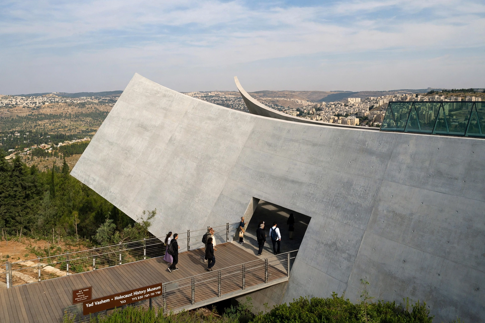

Yad Vashem
| Yad Vashem | |
|---|---|
 | |
| Established | 1953 (by Knesset law) |
| Location | Mount Herzl, Jerusalem, Israel |
| Type | Holocaust memorial and research institute |
| Full name | Yad Vashem — The World Holocaust Remembrance Center |
Yad Vashem (Hebrew: יד ושם, "a memorial and a name") is Israel's official memorial to the victims of the Holocaust, established in 1953 by an act of the Knesset. Located on the western slope of Mount Herzl in Jerusalem, it is the world's foremost Holocaust remembrance and research centre, preserving the memory of the six million Jews murdered by Nazi Germany and its collaborators, documenting their lives and deaths, and honouring non-Jews who rescued Jews at risk to their own lives.
Components
The complex includes the Holocaust History Museum, inaugurated in 2005, a triangular concrete prism cutting through the mountainside and presenting the history of the Holocaust largely through victims' personal stories and possessions; the Hall of Names, which stores "Pages of Testimony" recording biographical details of millions of victims and underpins a searchable central database of names; Yad Layeled, the children's memorial; the Hall of Remembrance; and the archives, which hold hundreds of millions of pages of documentation gathered from institutions worldwide, including records on the camps and the Einsatzgruppen.
Righteous Among the Nations
Yad Vashem administers the Righteous Among the Nations program, which recognizes non-Jews who risked their lives to save Jews during the Holocaust. Honourees receive a medal and certificate, and their names are inscribed on the Wall of Honour in the Garden of the Righteous. Tens of thousands have been recognized, including Oskar Schindler and Raoul Wallenberg.
Role
Yad Vashem hosts state ceremonies on Yom HaShoah (Holocaust Remembrance Day) and welcomes foreign heads of state and millions of visitors. It works alongside institutions such as the United States Holocaust Memorial Museum in research, education, and commemoration, and plays a central role in International Holocaust Remembrance Day observances.